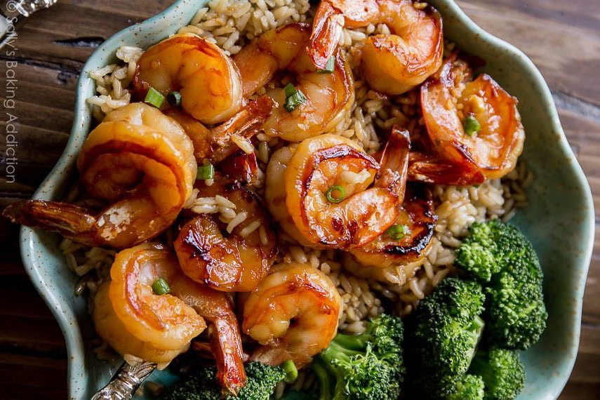
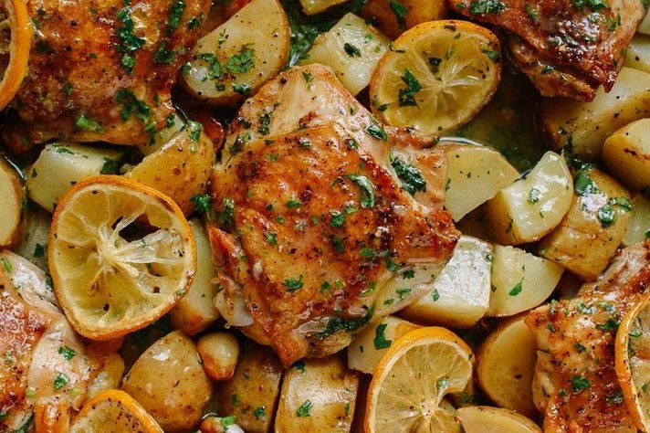
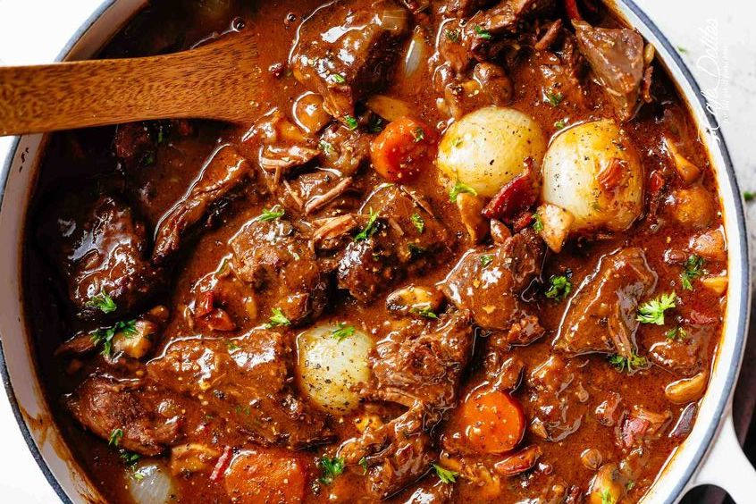
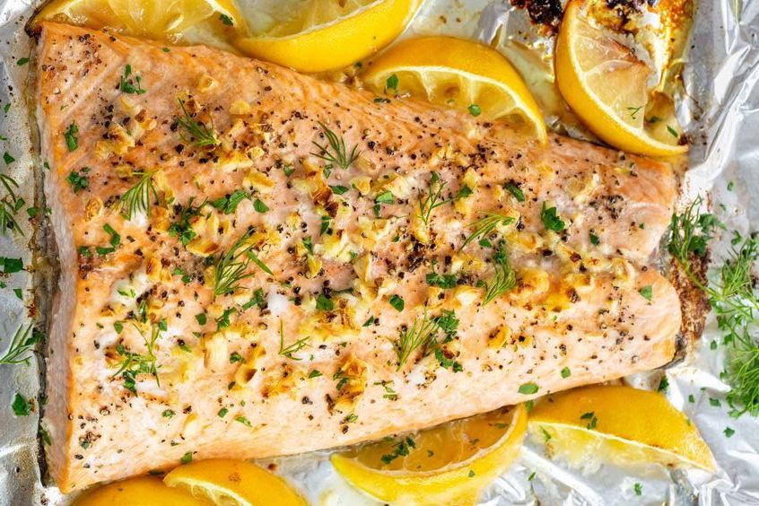
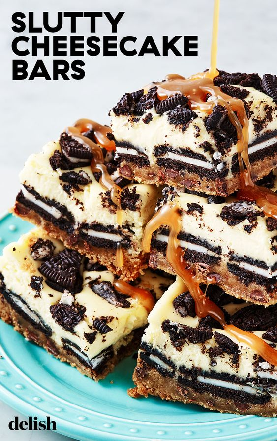
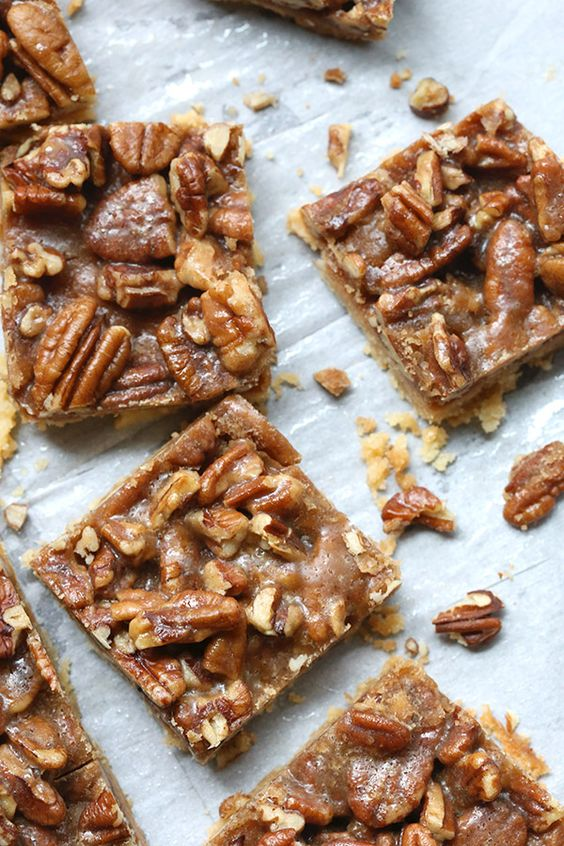

LUNCH

Honey Garlic Shrimp
20 Minutes

Roasted Lemon Chicken
40 Minutes

Beef Bourguignon
45 Minutes

Baked Salmon
30 Minutes
DESSERT

Slutty Cheesecake Bars
3 Hours 55 Minutes
Chocolate Chips Cookies
1 Hours 15 Minutes

Pecan Toffee Bars
45 Minutes
ABOUT US
Share information with you about Various Food Recipes, baking recipes and other cooking recipes. We hope that the Recipe Information we provide on the site can be useful for those of you who are looking for reference guides for cooking food for family or friends. And useful for society in general.
CONTACT US
ADDRESS: JL. TANJUNG DUREN UTARA A21
TEL: 123-456-7890 | RIRINOCNASYAFERA@GMAIL.COM
Subscribe For Updates and Promotions